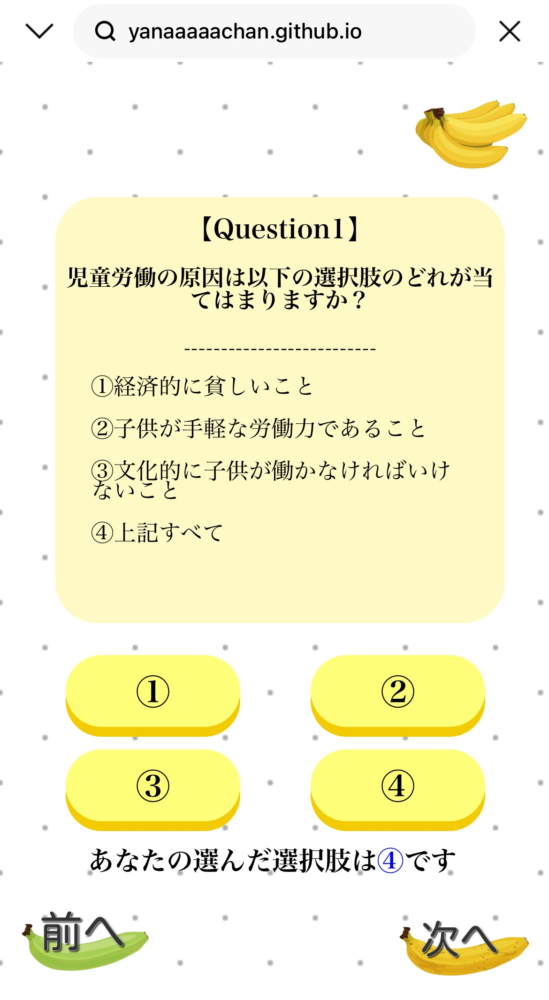

大学1年
9月
9月
気分に合うK-pop音楽を提案してくれるサイト「Feeling Fit Music」の制作
日々聞きたい音楽が気分によって変わることに注目し、二進法を活用したレコメンドサイトを制作しました。
初めてJavaScriptを使いましたが、動的な要素を取り入れるだけでもサイトの魅力度が高まることに気づきました。
制作したサイト：https://yanaaaaachan.github.io/feeling-fit-music-kpop-main2/
大学2年
8月
8月
大学2年
11月
11月
フェアトレードイベントで用いるクイズサイトの制作
フェアトレードイベントを主催した際に、10問のクイズを制作しました。
localStorageの活用やシンプルで直感的なUIを意識し、スマホを使って手軽にイベントに参加しやすいようにレスポンシブ対応を導入しました。
制作したクイズ：https://yanaaaaachan.github.io/fair-trade-quiz/

大学3年
4月
4月
情報セキュリティ×アクセスログ×ゲーム ログ監視体験ゲームの制作
学生のうちから情報セキュリティを学ぶことの重要性が周知されてきています。
そのため、難解な情報セキュリティ学習のハードルを下げたいと思い、この作品を制作したいと思いました。
アクセスログを使うことで実践的な情報セキュリティの学び、複数の概念を同時に学ぶことが可能になります。
制作したサイト：https://yanaaaaachan.github.io/log-monitoring-game/